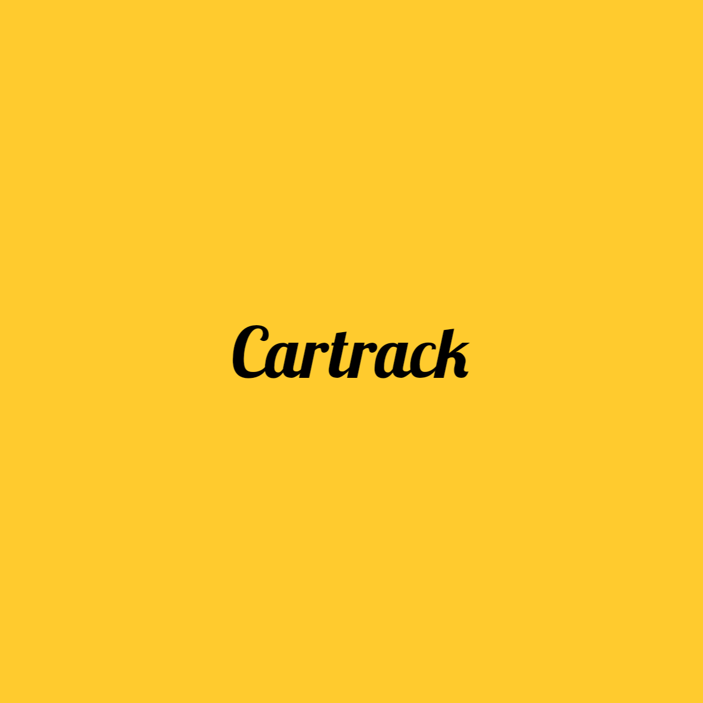

<!--
  Generated template for the BusPage page.

  See http://ionicframework.com/docs/components/#navigation for more info on
  Ionic pages and navigation.
-->
<ion-header>
  <ion-navbar color ="primary">
    <button ion-button menuToggle>
      <ion-icon name="menu"></ion-icon>
    </button>

    <ion-title>
      <ion-icon name="bus" item-start>
      </ion-icon> Cartrack
    </ion-title>
  </ion-navbar>

</ion-header>


<ion-content >
  <div class="pub">
  <ion-slides autoplay="2000" speed="2000" loop="true" pager>

    <ion-slide style="background-color: #ffc107">
     
    </ion-slide>

    <ion-slide style="background-color: #ffc107">
      
    </ion-slide>

    <ion-slide style="background-color: #ffc107">
      
    </ion-slide>

  </ion-slides>
  </div>


  <ion-list style="color: ">
    <ion-item *ngFor="let m of menus" (click)="onPage(m.component)">
      <ion-icon name="{{m.icon}}" item-start></ion-icon>
      {{m.title}}
      <ion-icon name="{{m.icon1}}" item-right></ion-icon>
    </ion-item>
  </ion-list>

</ion-content>

